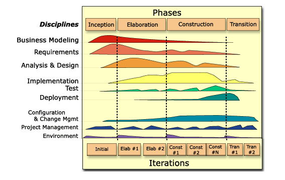

This Development Case describes any deviations from the underlying Wylie College's organizational Development Case, together they represent a configuration of the Rational Unified Process suitable for small to medium sized projects - like the Course Registration System Project.

click on an element for more information
The iteration cycle graph above presents a visual overview of the process architecture adopted, and provides access to the individual discipline configurations described by the development case.